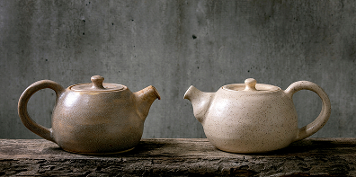
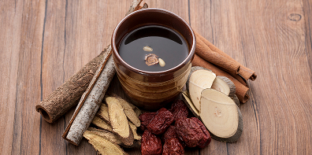
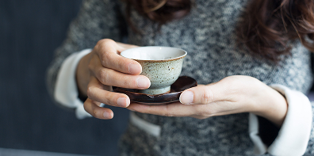
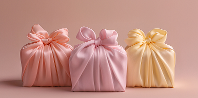

-
Balance

다온이 가장 중요하게 생각하는 기준은 균형입니다. 단맛이 과하지 않도록, 향이 부담스럽지 않도록, 전통이 무겁게 느껴지지 않도록 조율합니다.
우리는 전통과 현대, 익숙함과 새로움 사이에서 한쪽으로 치우치지 않는 맛을 설계합니다.
한 잔을 마셨을 때 편안하게 오래 머무는 여운, 그것이 다온이 말하는 균형입니다.
-
Sincerity

좋은 차는 재료에서 시작된다고 믿습니다. 그래서 다온은 화려함보다 본질에 집중합니다.
대추의 깊은 단맛, 오미자의 선명한 산미, 보리의 고소한 향처럼 각 재료가 가진 고유한 성질을 존중합니다.
우리는 불필요한 것을 더하기보다 본래의 맛을 정직하게 담아내는 방식을 선택합니다. 그것이 다온의 진심입니다.
-
Warm Presence

다온은 특별한 날보다 평범한 하루에 더 어울리는 브랜드가 되고 싶습니다.
누군가와 마주 앉은 자리에서, 혼자 잠시 쉬어가는 시간 속에서, 조용히 존재하는 온기처럼 머물며 언제든 다시 찾고 싶은 공간과 시간을 만들어갑니다.
눈에 띄기보다 기억에 남는 것. 다온의 차는 그렇게 공간과 시간 사이에 따뜻하게 자리합니다.
-
Sincere Craft

한 잔의 차를 완성하기까지, 재료 선택부터 블렌딩과 추출까지 모든 과정에 깊은 정성을 담습니다.
각 재료가 가진 고유의 향과 맛이 가장 잘 살아날 수 있도록 시간과 온도, 균형을 세심하게 조율합니다.
눈에 보이지 않는 작은 디테일까지 놓치지 않는 섬세함이 다온차만의 깊은 풍미를 완성합니다.